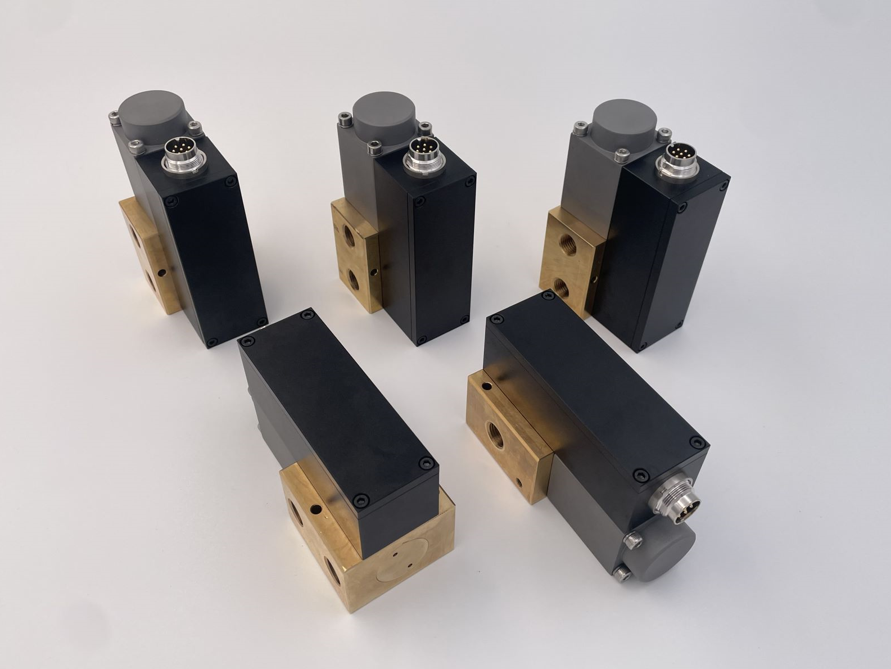
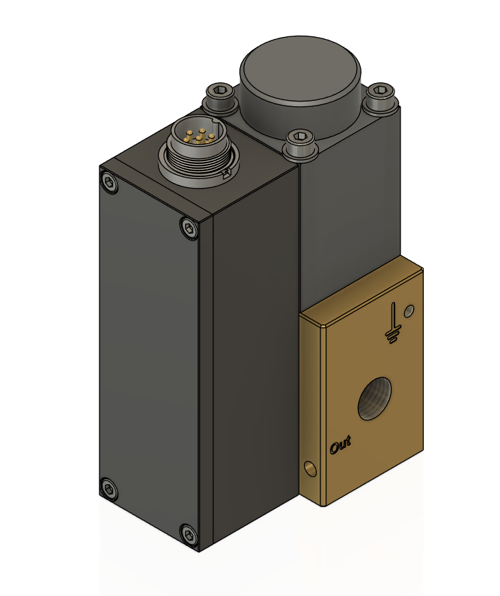
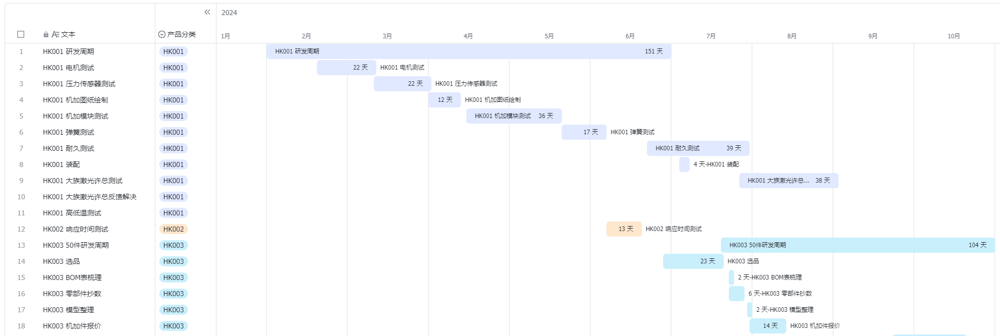
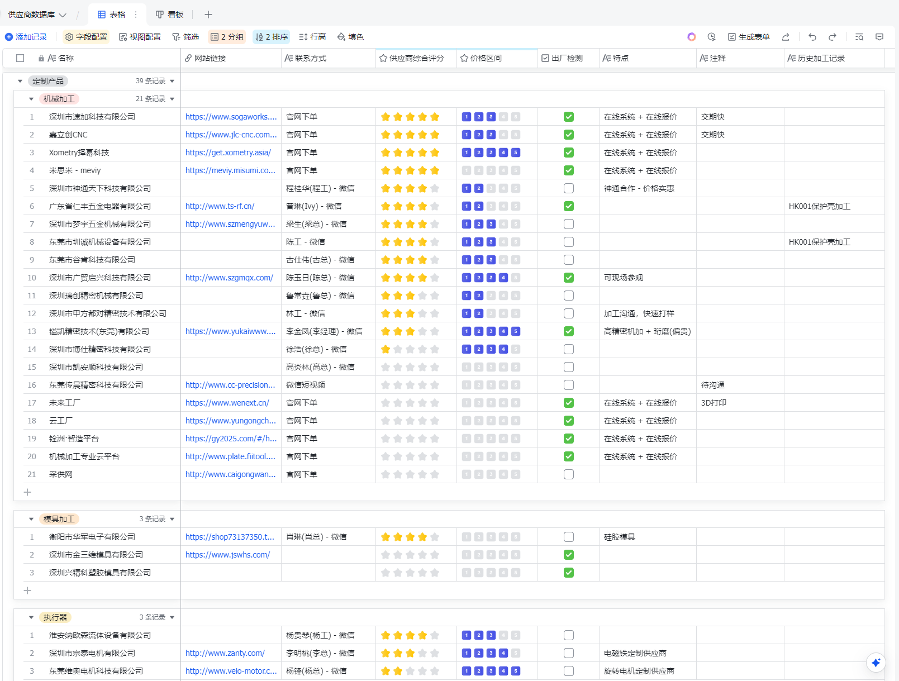
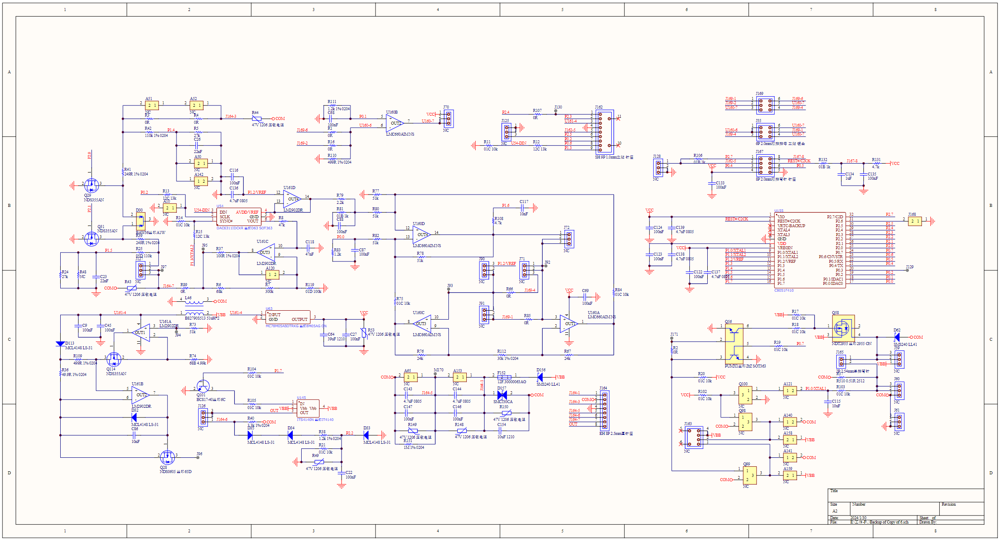
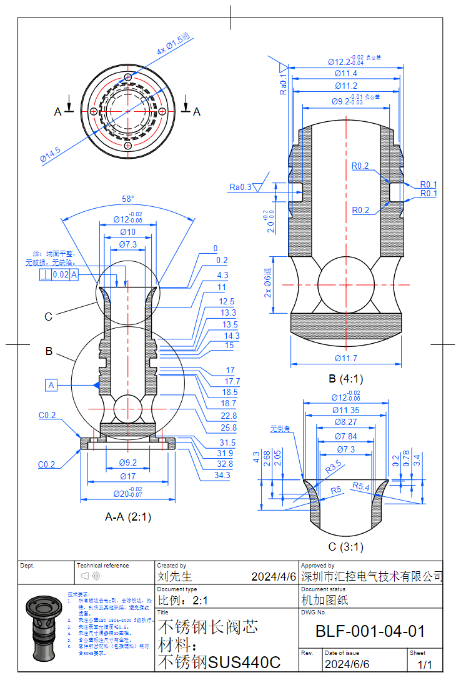
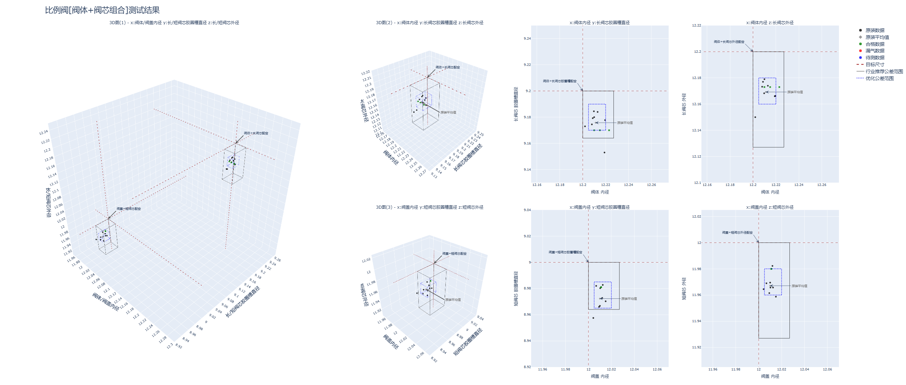
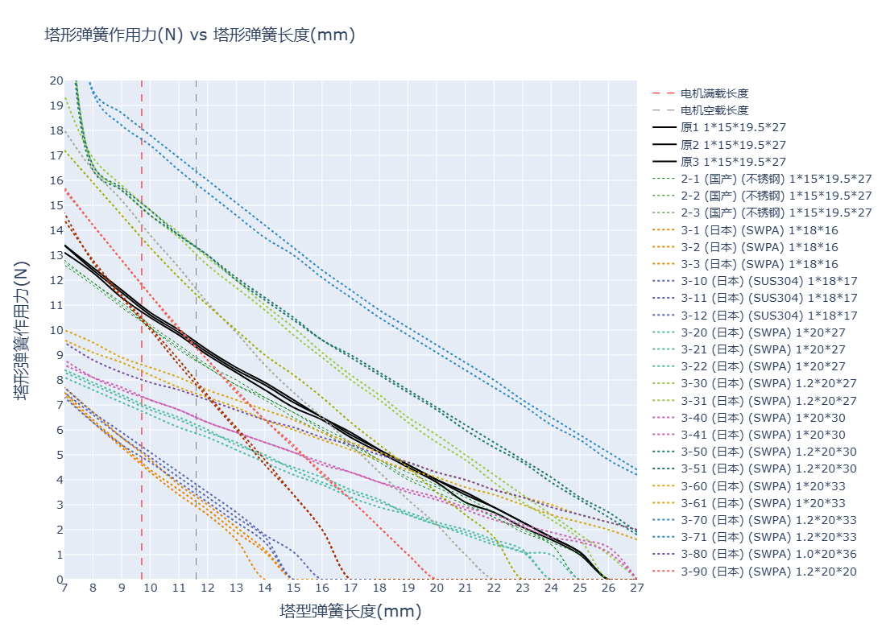

Proportional Control Valve
What is a Proportional Control Valve?
A proportional control valve is a type of pneumatic valve that controls air flow rate proportionally to an electrical input signal — unlike a simple on/off valve, it can continuously adjust flow, pressure, or direction based on a varying current or voltage input. By precisely regulating the spool position via an electromagnetic coil (solenoid), it achieves smooth, fine-grained control of pneumatic actuators (cylinders or grippers), enabling variables such as cylinder velocity, output force, and motion trajectory to be modulated with high accuracy.
This project covers the complete product lifecycle: concept design, detailed CAD modeling, kinematic analysis, tolerance stack-up management, prototype testing, supply chain coordination, and production documentation — applying mechanical engineering fundamentals to a real-world industrial component.
Design Overview

Five assembled valve units, each combining a black housing, brass base, circular electrical connector, and pneumatic ports.
📄 Valve Manual (PDF)Detailed CAD

3D CAD model of a single valve: the housing with its circular connector, the round top cap, and the brass base with the outlet port marked “Out”.
Working Principle
Sectional animation of the valve in operation, showing the spool moving inside the valve body.
R&D Process Management

Gantt chart of the 2024 development schedule for products HK001–HK003, covering motor and pressure-sensor testing, machining drawings, spring and endurance testing, assembly, and customer testing.
Supply Chain Management

Supplier database grouping machining, mold, and actuator vendors, with each vendor’s website, contact, overall rating, price range, factory inspection, and machining history.
Multi-functional Teams Collaboration

Control-circuit schematic showing the microcontroller, op-amps, MOSFETs, resistors, capacitors, and their signal connections.
Production Requirements

Machining drawing of the long stainless-steel spool (SUS440C), with a section view, detail views, dimensional tolerances, surface roughness, and technical requirements.
Combined Tolerance Inspection

Test results for valve-body and spool combinations: 3D and 2D scatter plots compare measured dimensions against the target size, the industry-recommended tolerance range, and the optimized tolerance range.
Spring Force Testing

Force–length curves of conical springs, comparing the original spring with alternatives in different materials (stainless steel, SWPA, SUS304) and sizes; dashed lines mark the motor’s full-load and no-load lengths.